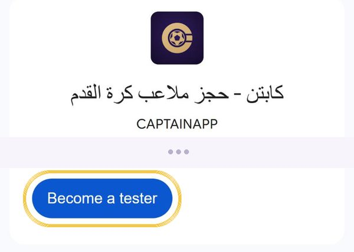

كابتن · النسخة التجريبية على أندرويد
افتحها بـ Chrome أول
فاتحها من داخل تطبيق (فيسبوك، إنستغرام، تيك توك). جوجل ما يخلّيك تسجّل دخول هنا، فافتحها بالمتصفح.
افتح بـ Chromeالزر ما اشتغل؟
اضغط النقاط الثلاث فوگ (⋮ أو …) واختار «فتح في المتصفح» أو «Open in browser».
التجربة الحين على أندرويد بس
الآيفون بعده. تابعنا على حساباتنا وراح نبلغك أول ما يفتح.
انضم لمجموعة المجرّبين
بنفس حساب Gmail اللي بـ Google Play. اضغط «Join group» أو «الانضمام إلى المجموعة» فوگ الصفحة، وبعدها ارجع هنا.
افتح المجموعةبعد ما تنضم، ارجع لهنا وتطلعلك الخطوة الجاية.
طلعتلي رسالة «ليس لديك إذن» أو «ماكو محادثات»
عادي، المجموعة بلا محادثات. إذا شفت «No conversations yet» يعني انضميت. ارجع لهنا.
محد يشوف بريدك غيرنا.
فعّل التجربة
اضغط الزر الأزرق «Become a tester» أو «أصبح مختبِرًا» بآخر الصفحة، وبعدها ارجع هنا.

بعد ما تضغطه، ارجع لهنا.
الصفحة تگول إن التجربة مو متاحة
يعني الحساب مو بالمجموعة بعد. تأكد إن نفس حساب Gmail مفتوح بالصفحتين، وارجع للخطوة الأولى.
نزّل كابتن
الزر يفتح متجر Google Play على صفحة كابتن. اضغط «تثبيت».
نزّل من Google Playبعد التثبيت ارجع لهنا للخطوة الأخيرة.
المتجر يگول التطبيق مو متاح
جوجل ياخذ كم دقيقة حتى يفعّل التجربة لحسابك. انتظر شوية واضغط الزر مرة ثانية.
افتح كابتن وادخل
اضغط «الدخول بحساب Google» بنفس الحساب. لا رمز ولا كلمة مرور، ورقمك ينطلب بس من تحجز أول مرة.
خلّيه بهاتفك ١٤ يوم. جوجل ما يخلّي تطبيق جديد ينزل للكل إلا إذا جرّبوه ناس ١٤ يوم ورا بعض. افتحه كم مرة: شوف الملاعب، سوّي فريقك، جرّب حجز.
لقيت مشكلة؟ راسلنا على أي حساب من حساباتنا، أو على captainappofficial@gmail.com، ويا صورة للشاشة إذا تگدر.